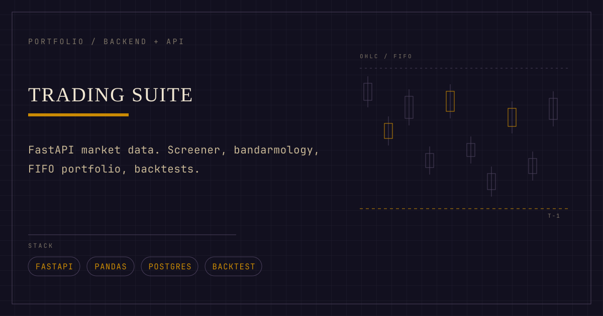

[ Python ] 4 of 6
Trading Suite
Self-hosted IDX market desk: FastAPI over a SQLite WAL cache, five UI routes.
./trading-suite run
[ 01 ] WHAT IT IS
In plain words
A self-hosted desk for the Indonesian stock market (IDX). It pulls quotes, history, foreign flow and broker activity from public feeds, caches them, and turns them into five screens: an overview, a charting page with foreign-flow bars, a streaming screener, a per-ticker profiler, and calculators.
It is for one person or a small team who wants their own copy of the market data rather than a subscription, and who is happy to run a backend and a front end on their own machine.
Nothing is stored in a company cloud: quotes live in a local SQLite WAL cache under backend/data/cache.db, and the only outbound calls are to the public data sources.
[ 02 ] ARCHITECTURE
How it is put together
- backend/app/main.py wires FastAPI routers from backend/app/routers/ (market, screener, validator, intel, analysis, regime, backtest, portfolio, summary, alerts, sentiment); services live one level up in backend/app/*.py. The front end is Next.js 16 app-router routes in src/app/{overview,markets,screener,profiler,calculators}, with the nav generated from one source in src/lib/apps.ts.
- Screener: backend/app/screener.py with backend/app/routers/screener.py streams results over SSE at GET /api/screener/scan/stream, and the suspended-ticker filter runs in backend/app/idx.py before the ThreadPool fan-out so excluded names are never fetched.
- Bandarmology (Indonesian broker-flow analysis) is the strongest single feature: backend/app/validator.py holds BandarmologyAnalyzer (phase, intent radar, flow metrics), served by backend/app/routers/validator.py at GET /api/validator/{ticker} and rendered inside the profiler page at src/app/profiler/page.tsx.
- FIFO portfolio P/L is a real engine - backend/app/_fifo.py holds FIFOEngine and JSON load/save, called only by backend/app/portfolio.py - but it is API-only: next.config.ts redirects /portfolio to /profiler, so there is no standalone portfolio screen.
- Backtesting is backend/app/backtest.py (pattern_backtests) behind GET /api/analysis/backtest/{ticker} in backend/app/routers/analysis.py - likewise API-only, since /backtest redirects to /profiler.
- Caching is the seam that makes it cheap: backend/app/cache.py plus backend/app/db.py give per-feed TTLs in a SQLite WAL file with stale-while-revalidate and _spawn_refresh dedupe; the front end mirrors it in src/lib/cache.ts (memory + sessionStorage).

[ 03 ] INSTALL
Set it up
cd backend
python -m venv .venv
.venv/bin/pip install -r requirements.txt
cp ../.env.example .env # optional; runs empty
cd .. && npm install
[ 04 ] QUICKSTART
See it work
- Start both halves with the runner from the repo root: chmod +x ./trading-suite && ./trading-suite run (backend on :8000, front end on :3000).
- Open http://localhost:3000 - the launcher shows exactly five cards: Overview, Markets, Screener, Profiler, Calculators.
- Go to /screener: the scan streams in over SSE rather than waiting for one big payload.
- Open /profiler?ticker=BBCA - one screen showing quote, candles, beta, regime, the bandarmology phase, the intent radar, the broker panel and an entry plan.
- Check the backend directly at http://127.0.0.1:8000/api/health, and browse the auto-generated API at http://127.0.0.1:8000/docs.
[ 05 ] NUMBERS
What the repo states
Backend test suite
REPO STATES39 passed
IDX universe in config
REPO STATES900+ tickers
UI routes after lean pass
REPO STATES22 apps to 5
Rows per IDX summary call
REPO STATES~963
[ 06 ] TRADEOFFS
What it does not do
- AI-generated summaries are not a working feature any more: backend/app/ai.py is an explicit no-op stub ('AI section has been dismantled'), it returns None and nothing imports it, so every caller falls back to deterministic text - the README's OPENCODE_GO_API_KEY row is stale and was left out of the claims above.
- FIFO portfolio tracking and pattern backtesting are backend-only: next.config.ts hard-redirects /portfolio and /backtest to /profiler, so both show up as API endpoints rather than screens.
- Broker data is best-effort and partly credentialed: the Stockbit panel needs STOCKBIT_JWT_TOKEN (or user/password) and shows a degraded message without it.
- Accuracy is bounded by third-party sources - an IDX summary endpoint scraped with curl_cffi, yfinance .JK history, and TradingView - so the numbers are cached copies of someone else's feed, not an exchange-grade tick store.
[ 07 ] SOURCE
Read the code
The full implementation, tests and documentation live in the repository.